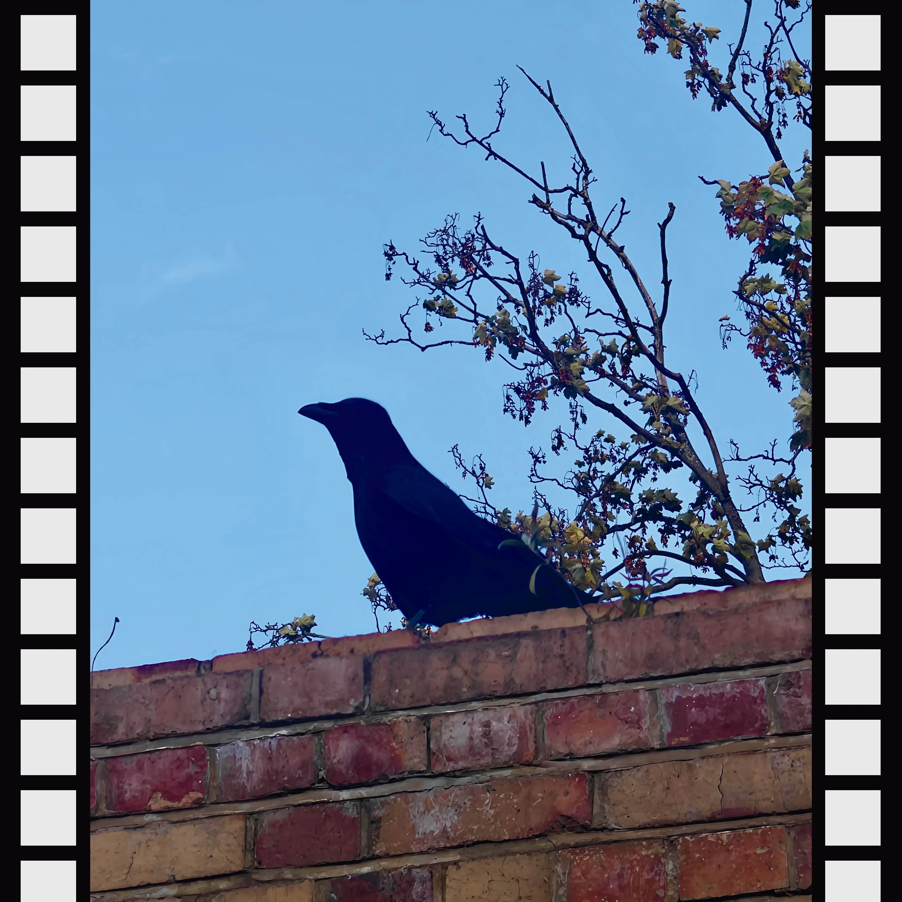

This project is an exploration of parachronism - bringing part of the past into the future.
Manually building everything with purpose through low-tech in a world of high speed automation.
Rooted in the Islamic concept of "wholesomeness" - building as honestly as possible.
From my natural perfume free of synthetic petrochemicals to this site, it's all visible for the world to see.
Everything starts of as a failure - there's no rushing past it.
No AI or fancy technology: it's all built by hand, one step at a time, manually and purposefully.